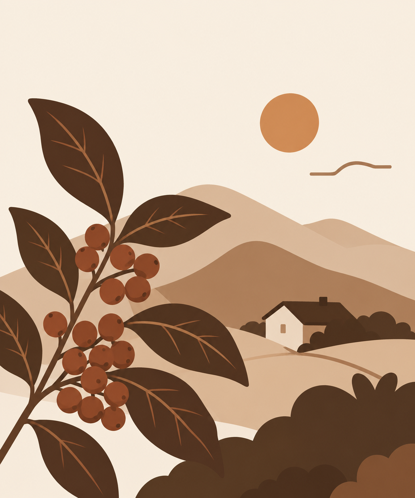

Our story
Made for slow mornings
Daily Brew began with a simple belief: a good cup of coffee can make an ordinary day feel warmer. We choose quality beans, roast them with care, and prepare every drink with patience so each cup feels worth slowing down for.
More than a place to pick up coffee, our shop is a comfortable neighborhood space for quiet mornings, friendly conversations, and small everyday moments. Whether you stay awhile or take your cup to go, we hope Daily Brew adds something good to your day.